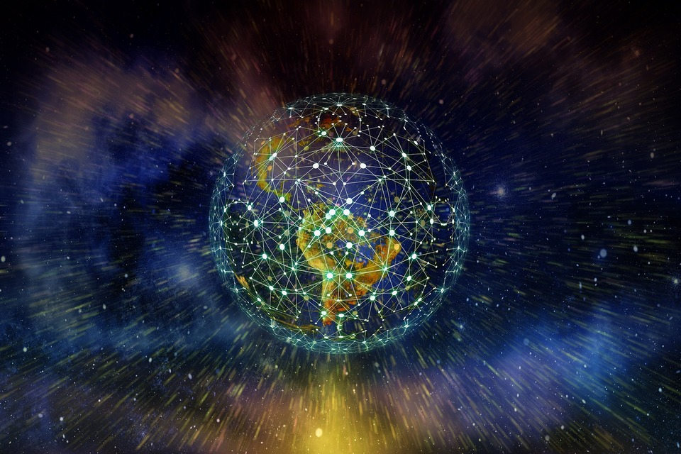
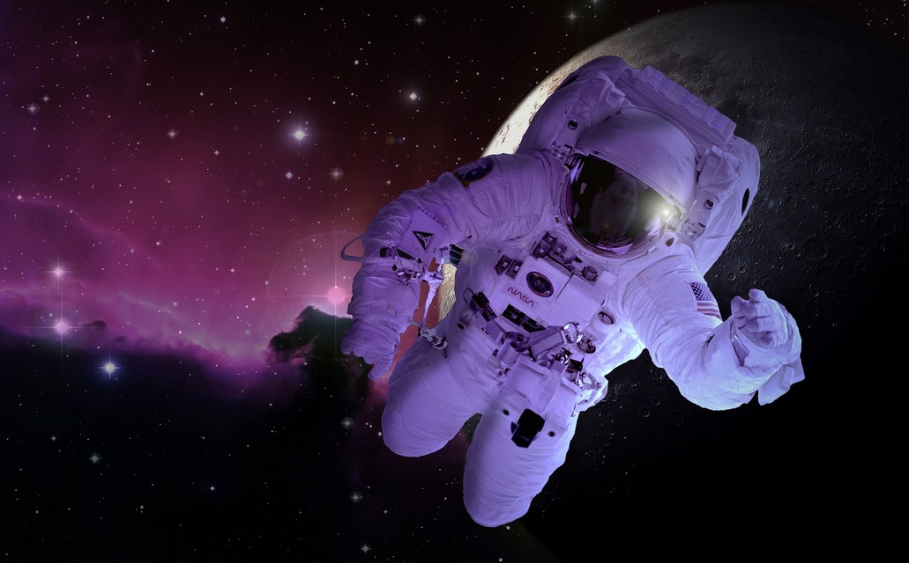
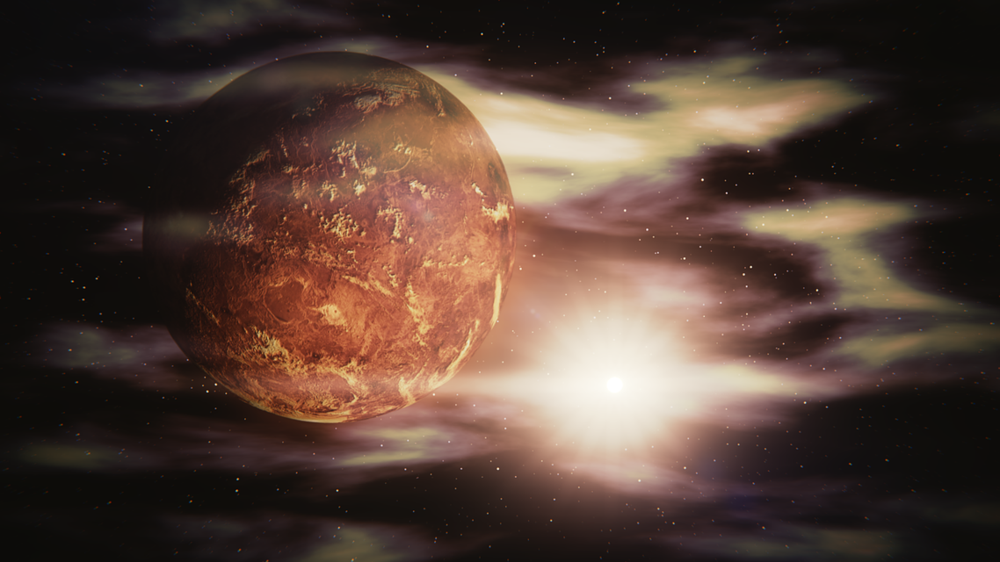

Какой-то мудрец однажды сказал: “Движение - это жизнь”. И это воистину так. Движение как ничто иное точно характеризует феномен жизни как таковой. Характеризует наш мир, каким мы его знаем и каким он всегда был. Мир, который никогда не стоит на месте. Все в нем течет и все меняется, переходя из одного состояния в другое, меняя и дополняя свои качества или наоборот, избавляясь от лишнего. Так всегда было, так есть и так будет. Цивилизации зарождались, существовали, процветали и умирали. И так было всегда, и так будет.
В конце ХХ века мир снова начал меняться. Распалось несколько государств и сферы влияния сместились, сместив тем самым и приоритеты государств оставшихся. Уже к 2050 году основные державы мира сосредоточили свои силы на попытках контролировать регионы, содержащие наибольшее количество ресурсов, что привело к большому количеству локальных вооруженных конфликтов, финансируемых теми или иными государствами или их союзами. Сами по себе происходящие то тут, то там вооруженные столкновения не имели какого-то глобального влияния на жизнь человечества, но в своей совокупности, если присмотреться к деталям, были частями одного большого пазла, имя которому - война за ресурсы и сферы влияния, за умы человечества, их волю и поступки.
Войны. Они всегда были частью движения человеческой цивилизации. Частью нашего естества. Мы алчем власти, богатства, влияния. Алчем быть чем-то большим, чем просто людьми, которые пришли в этот мир на миг, а когда он догорит, будут вынуждены уйти в небытие, чтобы движение продолжилось. И вот снова со всех доступных средств массовой информации звучали какие-то идеологические призывы, лозунги, агитации. Страны объединялись в союзы, расторгали их и снова подписывали договора, лицемерно давая слово, что с очередным пактом или соглашением все изменится в лучшую сторону. Мир продолжал двигаться, продолжал жить своей жизнью.
Если же отвлечься от всей этой философичности и посмотреть на события с немного иной точки зрения, то в какой-то момент человечество осознало, что ресурсы на Земле подходят к концу. Спираль бытия продолжала вращаться, но вот истраченные по дороге ресурсы, увы, не восстанавливались. Технологическое развитие человечества также зашло в тупик. А точнее, человечество само себя в него загнало, бесконечными гонками за частый выпуск той или иной продукции, попытками прыгнуть выше, пробежать дальше, заработать больше и быстрее. В какой-то момент все осознали, что технологиям просто больше некуда развиваться - мы придумали и создали все, на что было способно наше воображение и все, что нам оставалось, так это просто наращивать мощности.
Но движение нельзя остановить. Так началась масштабная кампания по освоению космоса в попытках обнаружить не только новые источники и виды ресурсов, но и источники вдохновения для задыхающегося от прогресса человечества. Уже в 2070-х годах была основана первая работоспособная и полностью автономная колония на Марсе. Сначала на планету было отправлено 50 специально обученных колонистов для освоения новых условий обитания и добычи ресурсов, а через десяток лет, и 412 добровольцев из гражданского населения Земли для заселения этой самой колонии. Казалось бы, все идет очень даже неплохо - мы осваиваем ближайший космос, развиваемся, но этот напускной успех лишь маскировал основную проблему - у человечества не было четкого понимания, как развиваться дальше.
С начала 2060-х годов на мировой политической арене стали появляться мегакорпорации, которые суммарно владели львиной долей активов Земли, которые были необходимы для ведения любых политических игр и создания разнообразных технологий, которые можно было вообразить на тот момент. Со временем, эти корпорации начали смещать государства с центрального места на политической карте мира. Все большее количество предприятий и некогда государственных органов Земли ориентировались на эти корпорации, а не на сами государственные органы той или иной страны. По правде сказать, и сами государства, как таковые, начали ориентироваться на интересы этих корпораций, ибо они были силой, которую невозможно было игнорировать. Корпорации были квинтэссенцией развития различных отраслей человеческой деятельности.
Мегакорпорации не были привязаны к конкретным регионам или уж тем более странам, которые они и вовсе сместили за ненадобностью и из-за их несоответствия новым реалиям жизни. Первое время им удавалось вполне мирно сосуществовать на мировой арене, но со временем их постигла та же участь, что и государственные институты - гонка за право быть первым во всем, владеть большей долей ресурсов и технологий поглотила и их тоже. И развитие технологий захлебнулось. Это понимали все и поэтому инвестирование в исследование космоса и развитие связанных с этим технологий вышло на качественно и количественно новый уровень.
Каждая корпорация прекрасно понимала, что их противостояние входит в более агрессивное русло, чем просто здоровая конкуренция. Со временем у каждой из них начали появляться вооруженные группировки, которые в случае необходимости могли силой отстоять интересы своих нанимателей. Часто эти наемники не гнушались самой грязной работой вроде организации теракта с огромным количеством жертв, и все лишь для того, чтобы свалить вину на другую корпорацию.
В начале 2090-х годов сразу несколько зондов различных корпораций, пролетая мимо Венеры приняли неизвестный сигнал, который тотчас же был послан на Землю. Это вызвало недоумение и настороженность ученых на Земле, потому что место, из которого на Венере исходил сигнал было не единожды изучено и на нем не было обнаружено ничего стоящего. Сразу же, как этот сигнал попал в руки ученых, все сведения об этом событии мгновенно были засекречены, а доступ ко всем данным имели только самые приближенные к руководству корпораций умы. В нескольких тайных лабораториях по всему миру начались попытки его расшифровки. Сигнал представлял из себя нечто похожее на сообщение, но язык, на котором он был написан, не был похож не на один из языков известных человечеству. Осознав тщетность попыток расшифровки сигнала, корпорации решили отправить свои зонды на саму планету в попытках обнаружить его источник.

Оборудованные по последнему слову техники корабли отправились в сторону Венеры. Настало время томительного ожидания. Оно тянулось томительно и тягостно, будоража воображение причастных. Никто не знал, что именно им суждено найти на Венере, но все надеялись на чудесное нечто, что спасет человечество от множественных бедствий, которые оно испытывало - болезни, старение, смерть…
На заре ХХІІ века корпорации получили данные о том, что на Венере была найдена инопланетная технология, которой в рамках засекреченного проекта присвоили название “Fatum”, что с латыни означает “судьба”. Корпорации мобилизовали все свои силы и в кратчайшие сроки к Венере подошли вооруженные силы различных корпораций. Ажиотаж вокруг находки был очень сильным, что породило чрезмерное напряжение среди всех заинтересованных сторон. После непродолжительных переговоров разразился вооруженный конфликт, который вошел в историю как Венерианский коллапс. Его целью был захват обнаруженной технологии и ее единоличное исследование одной конкретной корпорацией, что дало бы ей безоговорочное превосходство над всеми остальными силами земли.
Бои продолжались несколько дней, пока главы корпораций не осознали бессмысленность вооруженных стычек и не призвали свои вооруженные отряды к порядку. Результатом этого стал договор, по которому каждая из корпораций получала равную долю найденной технологии при условии использования обнаруженных знаний во благо землян.
Интересным фактом было то, что технология, найденная в рамках проекта “Fatum”, выглядела так, будто была оставлена на планете буквально вчера. Складывалось такое впечатление, что ни время, ни ядовитая атмосфера Венеры не были над ней властны. Но как это может быть? И почему сигнал от нее не был замечен ранее? Почему никто не нашел саму технологию раньше, ведь исследования Венеры были начаты уже очень давно? На эти вопросы не было ответов.
В результате исследований, корпорации выделили семь основных типов технологий, которые стали глотком свежего воздуха для развития технологий земных.
Одной из первых технологий, подаренных проектом “Fatum”, была технология Биоинженерной адаптации. Ученые выяснили, что сами обломки, найденные на Венере, не были построены там в привычном для нас смысле этого слова. Они были выращены там и имели в равной степени и технические аспекты, присущие машинам, и биологические аспекты, присущие живым существам. Трудно было сказать обладала ли она сознанием или нет, но симбиоз тканей и технологий был настолько невероятно продуманным, что ни один биоробот землян не мог с ним сравниться. Оставалось загадкой также то, как эти полуорганические остатки древней технологии уцелели в суровом климате Венеры. Эта технология позволяла придавать машинам свойства органики, что было полезно как в плане защиты от вражеских атак, так и в плане атакующих способностей и альтернативной боевой мощи, оснащенных такой технологией, машин.

Второй технологией была технология Искусственного интеллекта. У землян, естественно, и до этого были подобные технологии, но те, возможности, которые открыла перед человечеством инопланетная находка, не шли ни в какое сравнение с тем, что было доступно земным ИИ прежде. Поговаривали, что ученые, которые исследовали эту часть технологии, слышали некие голоса, которые пытались установить с ними контакт, нашептывая приказы о наступлении, отступлении и прочие команды, которые можно услышать во время боевых действий. Некоторые слышали голоса умерших родственников, которые звали их или даже угрожали. Несколько таких ученых поспешно уволились, еще несколько пропали. Ходили слухи, что голоса свели их с ума и работодатели закрыли их в психиатрические больницы подальше от глаз общественности. Позже выяснилось, что найденная технология ИИ распознавала человеческий мозг, как компьютер и пыталась найти способы взаимодействия с ним на ментальном уровне. Со временем ученые научились контролировать ее активность, что позволяло избежать дистанционного взлома собственного сознания. Внедренная в земные корабли, эта технология позволяла брать под контроль вражеские корабли на больших расстояниях, будто бы она могла говорить не только с живыми существами, но и с машинами.
Также технология Искусственного интеллекта с Венеры позволила создать технологию, позволяющую напрямую внедрять информацию с накопителей в человеческий мозг. Это ознаменовало новую эру в космическом судостроении. Подобный чип, вживленный в мозг капитана корабля, позволял отдавать команды кораблю напрямую, через непосредственный диалог человеческого разума и машины.
Третьей обретенной технологией была технология Манипуляции пространством. С ее помощью становилось возможным обходить всякие пространственные ограничения. Казалось, что расстояния, скорости, ускорения и прочего просто не существовало, когда применялась эта технология. С ее помощью можно было мгновенно переместить любой предмет из одной точки в другую, минуя всякие ограничения. Единственным побочным эффектом было то, что при попытке перемещения живых существ, те иногда возвращались с перемешанными внутренними органами, в виде кашицы или не возвращались вообще.
Эта технология позволила искривлять и искажать пространство, которое становилось похожим на глину, из которой можно было вылепить все, что пожелаешь. Некоторых такая мощь пугала, для некоторых же открывала неограниченное пространство для экспериментов и исследований.
Схожей по принципу действия была технология Манипуляции материей. Она позволяла менять и искажать материю самыми невообразимыми способами, что, однако, могло быть использовано не только в качестве оружия, но и для лечения раненых. Она позволяла создавать новую материю прямо на глазах или расщеплять на элементарные частицы уже имеющуюся, что повлекло за собой создание оружие, которое впоследствии дало оставило далеко позади любое ядерное вооружение Земли. Последнее по своей сути было лишь, с позволения выразиться, пробой пера перед использованием поистине разрушительной мощи, которой и стала эта технология.

Технология Манипуляции энергией была третьей технологией подобного спектра действия и свойств. Ее название вполне отражало ее суть. С помощью этой технологии можно было управлять энергией, которой пропитана каждая клетка мироздания. Эта возможность давала практически неограниченные возможности как созидать, так и уничтожать.
Две оставшиеся технологии отличались от всех прочих. Первой из них была технология Манипуляции временем. Она позволяла обращаться со временем, как с материей, изменять и искажать его любым образом. Но подобные манипуляции могли иметь серьезные последствия в виде парадоксов. Некоторые ученые меняли прошлое и никогда не появлялись на свет, некоторые старели за считанные секунды и превращались в прах, некоторые наоборот вновь становились младенцами. А кто-то и вовсе призывал свою копию из прошлого, что порождало парадокс такой силы, что пытаясь излечиться, мироздание мгновенно стирало их обоих.
Последней, но не по значимости, была технология Манипуляции судьбой. Она имела крайне занимательные особенности, способные взбудоражить воображение даже самого закоренелого скептика. Основой этой технологии была удача, которой можно было распоряжаться по своему усмотрению. Можно было запустить целый ряд событий, который в итоге приводил к последствиям, необходимым манипулятору, изменять ход и уклад жизни целых народов, если не цивилизаций.
Длительное время перед экспедицией на Венеру корпорации трубили о предстоящий открытиях и о новом витке в развитии человечества и технологической мысли со всех возможных источников. Публиковались разведданные, среди которых были фотографии, результаты исследований и прочее. Тем более странно выглядело внезапное затишье с их стороны после событий Венерианского коллапса. Все исследования были строго настрого засекречены, любое разглашение сурово пресекалось. Среди населения ходили самые разнообразные слухи - что на Венере был установлен контакт с внеземной цивилизацией, что был найден артефакт, подчинивший сознание правящей верхушки и другие. Среди них, конечно же, попадались и слухи, которые соответствовали или же частично соответствовали действительности, - что была найдена непонятная технология с невообразимыми свойствами, что корпорации проводят исследования и испытания нового оружия. Буквально все, от больших городов, в которых постоянно кипела жизнь, до маленьких деревушек, которых осталось уже не так много, наполнилось шепотками, которые обсуждали заговоры и интриги, что плелись за кулисами мирового правительства.
И шепотки были услышаны неравнодушными гражданами Земли со всех ее уголков. В местах их скопления с целью вывести правящую верхушку на чистую воду была образована хакерская группировка под названием Void. Название свое она получила от обозначения пустого типа данных, чем ее члены хотели подчеркнуть свою анонимность и неприкосновенность. В группировку входили люди со всего мира, которым была неравнодушна судьба человечества и которые не хотели мириться с монополией корпораций в их жизни. Сначала они занимались мелкими делами - взлом серверов дочерний компаний различных корпораций, расследование загадочных событий, создание роликов, компрометирующих корпорации и так далее. Но после событий на Венере, стало понятно, что группировка Void задумала что-то крупное - хакерские атаки на дочерние компании и структуры прекратились, общая активность их заметно упала. Корпорации понимали, что активисты готовят что-то масштабное, но не придавали особого внимания их попыткам пробить оборону их серверов. Это можно было назвать затишьем перед бурей. Так оно и случилось.
В 2107 году группировка Void совершила массированную хакерскую атаку на сервера всех ведущих корпораций и слила в сеть абсолютно всю информацию по исследованиям технологий, найденных в рамках проекта “Fatum” на Венере, что была на серверах компаний. Среди населения это произвело эффект разорвавшейся бомбы. В некоторых городах и поселениях началась массовая истерия, потому что люди считали, что с подобного рода технологиями, правящая верхушка будет единолично и безнаказанно распоряжаться их жизнями. Некоторые призывали к вооруженным акциям против корпораций, а некоторые просто восхищались обнародованным исследованиям. По всему миру была объявлена всеобщая боевая готовность, полиция 24 часа в сутки была готова снова и снова пресекать вспыхивающие то тут, то там конфликты. Человечество оказалось не готово даже к осознанию обладания подобными технологиями.
Корпорации были ошеломлены подобным развитием событий. Они знали о том, что Void готовят что-то масштабное, но не предполагали, что их планам суждено воплотиться в жизнь. Тогда представители корпораций обрушили свой гнев на членов хакерской группировки. Прокатилась волна арестов, некоторые представители Void были убиты при попытке сопротивления. Мир погрузился в хаос. Осевшие в подкорке человечества страхи о разрушительной войне, что принесет смерть всему живому, снова явили себя миру. Void хотели открыть миру правду, чтобы обезопасить его от управления корпорациями-монополистами, но вышло так, что погрузили его в безумие.
Главы корпораций по всему миру понимали, что нужно остановить творящийся почти по всей планете хаос, как можно скорее. Также они осознавали тот факт, что изъять из разума человечества, так опрометчиво к ним попавшую. информацию о внеземных технологиях уже не получится, поэтому пришли к альтернативному решению. Выступив во всех центральных средствах массовой информации мира, они заявили об открытии исследовательских центров на Земле, в которых на внеземные технологии, найденные на Венере, будут исследоваться на абсолютно прозрачной основе. Доступ к этим исследованиям, сможет получить любой желающий человек в любое время.